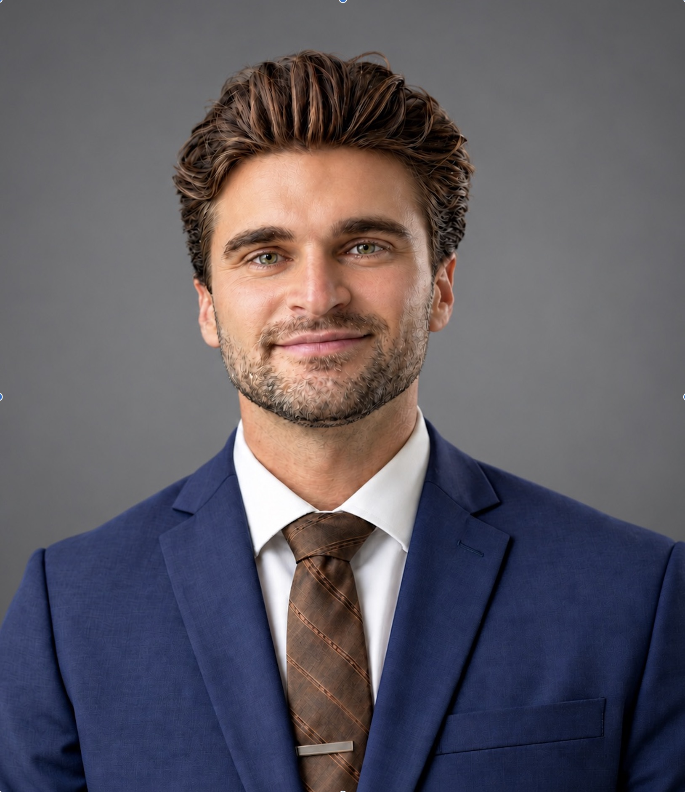

Spine surgery & outcomes
Studying perioperative medications, surgical approaches, and factors associated with recovery through retrospective cohorts, systematic reviews, and clinical trial analyses.
Medicine · Research · Mentorship
Medical student & researcher
University of Cincinnati College of Medicine
Exploring questions in neurosurgery, advancing clinical research, and helping fellow students find their footing.

I’m a medical student at the University of Cincinnati with a background in neuroscience and a particular interest in neurosurgery.
My work spans spine surgery outcomes, neurotrauma, and the history of neurosurgery. As Student Research Director of the Spine Outcomes and Aging Laboratory, I help lead our medical student team and mentor students through study design, analysis, and scientific writing.
I also serve as a Senior Clinic Manager at the UC Student-Run Free Clinic, supporting physician-supervised care for uninsured adults.
Studying perioperative medications, surgical approaches, and factors associated with recovery through retrospective cohorts, systematic reviews, and clinical trial analyses.
Investigating diagnostic protocols and clinical outcomes in traumatic brain injury, alongside research in cerebrovascular and endovascular neurosurgery.
Exploring the evolution of neurosurgical practice and surgical education, and reviewing neurosurgical interventions for treatment-refractory obsessive-compulsive disorder.
A selection of published research. See my CV for the full publication list.
Outside medicine, I make time for exercise, nutrition, and creative projects.
My interests range from art and design to building furniture, modifying cars, coding, and creative writing. I like learning how things work—and making something of my own.
Find me online, follow my work, or say hello.